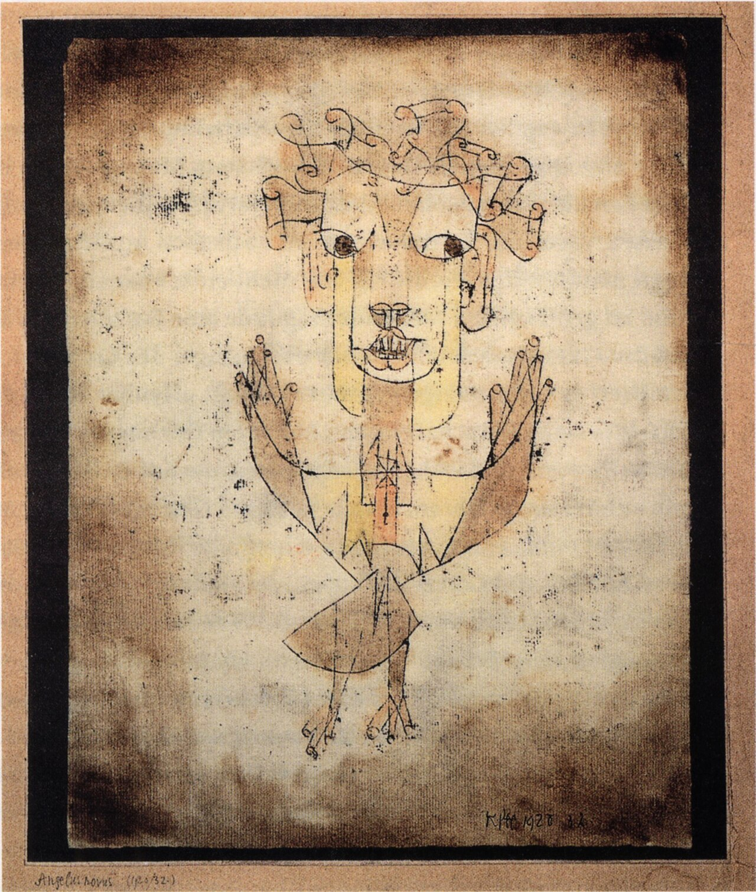

PART 3. 20세기 비판이론 · 4~5주차 물질성
아우라는 신비한 느낌이 아니라
세 겹의 정확한 개념임
발터 벤야민 — 기술복제와 아우라
00이 주차의 위상
이 강의에서 가장 많이 인용될 주차임. 그리고 생성 AI 논의에서 가장 많이 소환되는 이론가가 벤야민임. 그래서 원문을 정확히 붙잡는 것이 특히 중요함.
여는 질문
- 같은 그림을 두 번 봄. ① 휴대폰 화면으로 5초. ② 미술관에서 유리 너머로, 줄 서서 5초.
- 무엇이 다른가. 그리고 그 다름은 그림에 있는가, 나에게 있는가.
- 벤야민의 답 — 둘 다임. 그리고 세 번째로 "시선의 관계에 있음"을 덧붙임.
01오늘 만날 개념
- 아우라aura
- 그리스어로 입김 · 공기 · 부드러운 바람임. 성화에서 성인 머리 주위의 빛 테두리. 벤야민은 이 종교적 말을 예술 개념으로 가져옴.
- 제의적 가치Kultwert
- 숭배되기 위한 가치임. 신전 안 깊숙이 놓인 조각. 아무도 못 봐도 됨.
- 전시적 가치Ausstellungswert
- 보여지기 위한 가치임. 미술관 벽의 그림. 안 보이면 의미가 없음.
- 미메시스mimesis
- 보통은 '모방'임. 단 벤야민에게는 흉내가 아니라 "~되기", 감응하며 닮아가는 관계임.
- 무의지적 기억mémoire involontaire
- 의도해서 떠올린 기억이 아니라 불현듯 밀려오는 기억임. 프루스트의 마들렌 — 과자 한 입에 어린 시절이 통째로 되살아남.
- 몽타주 · 미장센montage / mise-en-scène
- 몽타주는 편집으로 붙이기, 미장센은 화면 안에 배치하기임.
- 사적유물론historical materialism
- 마르크스의 역사관. 물질적·경제적 조건이 사회를 규정한다는 관점임.
- 분산적 지각zerstreute Wahrnehmung
- 집중과 침잠이 아니라 스쳐 지나며 받아들이는 지각임.
02벤야민이라는 사람

Photo d'identité sans auteur, 1928 · Public domain · Wikimedia Commons
| 주요 저작 | 무엇을 다루는가 |
|---|---|
| 『언어 일반과 인간의 언어에 관하여』 | 언어철학. 아담의 언어와 타락 |
| 『독일 비극의 기원』 | 알레고리와 바로크 비애극 |
| 『사진의 작은 역사』 | 초창기 사진의 아우라, 앗제 |
| 『기술복제 시대의 예술작품』 | 오늘의 중심 텍스트임 |
| 『보들레르의 몇 가지 모티브에 관하여』 | 대도시 경험과 충격 |
| 『아케이드 프로젝트』 | 19세기 파리의 미완성 대작 |
| 『역사철학 테제』 | 역사의 천사, 진보 비판 |
파시즘 비판과 역사철학
- 피억압·소외 민중의 역사가 필요함. 기존 역사는 권력 집단의 폭력의 역사임.
- 목적론적 시간관, 진보적 역사관, 과거-현재-미래 3분법을 비판함.
- 과거는 폐기되지 않았음. 살아서 우리에게 말을 걸어옴. 기억을 통해 과거의 이미지를 붙잡아야 함.
- 사적유물론과 메시아니즘의 결합임.

Christian Mantey (photographer), Kulturagent · Public domain · Wikimedia Commons
역사의 천사 — 『역사철학 테제』 9번
- 천사는 과거를 향해 얼굴을 돌리고 있음. 잔해가 쌓이는 것을 봄.
- 그런데 진보라는 폭풍이 불어 천사를 자꾸 미래로 밀어냄.
- 천사는 멈춰서 부서진 것을 고치고 싶지만 그럴 수 없음.
언어철학 — 아우라 이해에 필요한 만큼만
아담의 언어
원초적 언어- 본질적 명명 — 모든 사물이 자기 본질을 나타내는 이름으로 불림
- 주체-주체 관계 — 인간과 사물이 본래 소통할 수 있었음
- 언어와 존재가 본래 하나였음
언어의 타락
바벨탑- 자연의 대상화 — 사물이 착취 대상으로 전락
- 기호의 자의성 — 임의적 기호의 전달 수단으로 전락
- 언어와 존재가 분리됨
구제비평
예술비평- 원초적 언어의 흔적은 여전히 남아 있음
- 비평을 통해 예술의 소리 없는 말을 구제함
3주차 니체와 대질
- 니체 — 언어는 처음부터 가면이었음.
- 벤야민 — 처음엔 통합돼 있었고 나중에 타락했음.
- 스스로 물어볼 것 — 어느 쪽이 설득력 있는가.
03아우라 — 세 겹의 정의
"공간과 시간으로 짜인 특이한 직물로서,
아무리 가까이 있더라도 멀리 떨어져 있는
어떤 것의 일회적인 현상"
아무리 가까이 있더라도 멀리 떨어져 있는
어떤 것의 일회적인 현상"
벤야민의 아우라 정의. 셋으로 쪼개 읽음.
첫째 — 대상의 객관적 특징
- 일반 대중의 접근 제한 — 전통적 예술작품은 소수 특권층의 소유였음. 전시적 가치보다 제의적 가치가 앞섬.
- 원본성 · 진품성 · 일회성 — 복제될 수 없는 성격임. 복제되더라도 원본에 비해 평가절하됨.
- 현존성 — 원본은 여기 지금 일회적 현존재로 나타남.
- 작품의 권위는 예술가의 창조성이 아니라 작품의 물질적 속성에 근거함.
이 문장이 벤야민을 물질성 축에 놓는 이유임
"권위는 창조성이 아니라 물질적 속성에 근거함" — 작품의 존재 자체보다 작품이 보여지는 방식이 중요하다는 뜻임.
사례 — 왜 진품에 줄을 서는가
루브르의 〈모나리자〉는 유리 뒤 멀리 있고 사람에 가려 잘 보이지도 않음. 화집 사진이 훨씬 선명함. 그런데도 사람들은 줄을 섬. 보러 간 것은 이미지가 아니라 "그 물건이 거기 있음"임.
둘째 — 수용자의 주체적 경험
- 원본성·진품성·일회성이 인간의 지각에 영향을 줌.
- 심미적 거리 — 볼 수 없음, 또는 가까이 할 수 없음. 작품이 가까이 있더라도 먼 곳의 일회적 현상으로 지각됨.
- 예술작품으로부터의 소외와 경외감 → 숭배의 대상으로 느껴짐.
- 개인의 관조적 침잠과 집중이 필요함.
기억과 관련된 아우라
- 아우라는 "무의지적 기억에 자리잡고 있는 지각 대상의 주위에 모여드는 표상들"임.
- 의식적·분석적 기억에는 아우라가 나타나지 않음.
- 사례 — 플레이리스트에서 골라 튼 노래와, 카페에서 우연히 흘러나와 어린 시절이 확 떠오른 노래는 다름. 찾아서 온 것에는 아우라가 없음.
04시선을 되돌려주는 능력
셋째 정의. 가장 중요한 대목임.
"어떤 현상의 아우라를 경험한다는 것은
시선을 되돌려주는 능력을
그 현상에 부여하는 것임."
시선을 되돌려주는 능력을
그 현상에 부여하는 것임."
내가 보는 것이 나를 마주 봄.
- 시선의 가까움과 멂의 변증법 — 대상이 가깝게 다가오는 듯하면서도, 동시에 대상에 의해 어딘가 먼 곳으로 끌려감. 이율배반적 경험임.
- 시선에 응답하는 상호 과정에서 주체의 경계가 허물어지고 유사성 관계가 생김.
- 바쁜 현대인의 방어적·일방적 시선에는 아우라가 나타나지 않음.
오늘의 결정적 지점
- 아우라는 대상에 있는 것도, 나에게 있는 것도 아님.
- 둘 사이의 시선 관계에 있음.
- → 1주차 metaxu(사이에 있는 것)의 가장 아름다운 사례임.
스스로 물어볼 것
- 오래된 인형이나 나무를 보고 "쳐다보는 것 같다"고 느낀 적이 있는가.
- 반대로, 하루 종일 본 수백 장의 피드 이미지 중 나를 마주 본 것이 있었는가.
- → 아우라는 대상의 등급이 아니라 시선의 왕복 여부임.
- 그리고 — 생성 이미지는 시선을 되돌려주는가. 되돌려줄 주체가 없다면 아우라는 원리적으로 불가능한가. 그런데 우리는 왜 어떤 AI 이미지 앞에서 멈추는가.
05기술 복제 시대
- 사진과 영화 기술의 등장이 배경임.
- 사물을 공간적으로 가까이 두고 싶어하는 인간적 욕망의 실현임.
예술작품의 변화
일회성기술 복제 이전
여기 지금 한 번뿐인 현존재
반복성
같은 것이 여러 번 나타남
지속성
언제든 다시 볼 수 있음
일상성지금
특별할 것이 없어짐. 권위의 근거가 사라짐
- 일반 대중의 민주적 접근이 가능해짐.
- 원본과 복제품의 차별성이 사라짐.
지각의 변화 — 오늘의 두 번째 핵심
| 무엇이 바뀌는가 | 어떻게 바뀌는가 |
|---|---|
| 시공간의 제약 | 자유로워짐 |
| 분산적 지각 | 정신 집중과 침잠이 불가능해짐 |
| 촉각적 지각 | 시각으로 지각하지만 촉각과 유사한 체험. 몸에 새기는 지각임 |
| 주체의 태도 | 능동성과 비판이 가능해짐 |
| 예술의 위상 | 종교적 숭배 → 심미적 유희 |
결론 — 몰락이 아니라 시작
예술의 몰락이 아니라 새로운 형태의 예술의 시작임. 여기서 벤야민은 아도르노(6주차)와 갈라짐. 벤야민은 이 변화를 기회로 봄.
06사진과 영화
초창기 사진에는 아우라가 있었음
- 이유는 기술적 한계임.
- 긴 노출 시간 — 몇 분씩 걸렸음. 여러 시간대의 빛이 겹쳐 들어가 미묘한 분위기가 생겼음.
- 초상 사진의 전통 — 죽었거나 멀리 있는 사람을 기억하고 숭배하는 수단이었음.
아우라의 조건이 '우연'이었음
초창기 사진의 아우라는 통제할 수 없었기 때문에 생겼음. 사진사가 의도하지 않은 빛과 움직임이 들어갔음. 이 대목을 09절에서 다시 씀.
Eugène Atget · Public domain · Wikimedia Commons
앗제 — 아우라의 몰락
- 파리의 경치, 일상, 골목길, 텅 빈 거리를 찍음.
- 벤야민은 이를 "현실에 덧칠된 아우라를 지운다"고 읽음.
- 예술적 후광을 제거하고 증거로 만든 것임.
- → 사진의 아우라 상실이 곧 정치적 능력의 획득이라는 논리임.
영화의 새로운 지각
- 새로운 기술 — 미장센과 몽타주. 움직이는 이미지를 자유롭게 구성함.
- 공간과 시간의 논리적 서술로부터 해방됨. 아리스토텔레스의 인물-사건-행위 일치 문법을 탈피함.
- 시공간의 해체와 재구성. 쇼크 경험을 통해 침잠을 방해함.
- 지각 방식은 '정신 산만한 시험관'임 — 분산적·촉각적·오락적으로 지각하면서도 검사함.
- 민주적 매체 이용 — 영화관은 불특정 다수가 참여하는 공적 공간임. 예술의 독자성·자율성이 해체됨.
07대도시와 분산적 지각
"대도시는 커다란 도서관.
각종 포스터와 수많은 광고판.
빠른 속도 — 파노라마처럼 스치는 대상들."
각종 포스터와 수많은 광고판.
빠른 속도 — 파노라마처럼 스치는 대상들."
강의 슬라이드 원문.
- 촉각적·분산적 지각 체험임.
- 시각적 체험이지만 스쳐 지나는 촉각적 느낌임.
- 충격과 연습. 다양한 대상에 지각을 분산 사용함.
벤야민의 1930년대 문장을 지금으로 옮기면
| 벤야민의 문장 | 지금의 사실 |
|---|---|
| "파노라마처럼 스치는 대상들" | 피드 |
| "충격과 연습" | 3초마다 바뀌는 자극에 길들여지는 훈련 |
| "다양한 대상에 지각 분산 사용" | 멀티태스킹 |
| "시각적 체험이지만 스쳐 지나는 촉각적 느낌" | 엄지로 넘기는 스크롤 |
벤야민은 1930년대에 지금의 피드를 묘사했음. 그런데 그는 이것을 비판이 아니라 새로운 지각의 훈련장으로 봤음.
스스로 물어볼 것
- 자기 피드를 30초 넘겨 본 다음, 벤야민의 네 문장을 자기 경험의 말로 다시 써 볼 것.
- 그리고 — 벤야민의 긍정에 동의할 수 있는가.
- → 6주차 아도르노가 이 지점을 정면으로 반대함.
08복제 · 변형 · 생성
심혜련(2024) III부 1장 2~4절 pp.276~294.
| 절 | 제목 | 요지 |
|---|---|---|
| 2절 pp.276~281 | 이미지의 기술적 재생산 | 벤야민의 직접적 갱신. 사진·영화에서 디지털로 |
| 3절 pp.282~289 | 이미지의 디지털적 변형 | 디지털 이미지는 복제가 아니라 변형됨 |
| 4절 pp.290~294 | 이미지 존재 방식의 혼종화 | 원본/복제 이분법이 무너진 자리에 무엇이 오는가 |
세 단계를 반드시 구별할 것
복제
벤야민의 시대- 같은 것을 여러 개
- 인쇄된 포스터 100장. 원본 그림은 미술관에 있음
- 아우라가 원본에 남음
변형
디지털- 매번 다른 것
- 같은 사진에 필터를 다르게 먹인 스무 장. 어느 것이 원본인가
- 원본이 흐려짐
생성
생성 AI- 원본 없는 것
- 프롬프트로 만든 스무 장. 원본이라 부를 것이 아예 없음
- 아우라를 물을 자리가 있는가
마지막 칸의 물음이 11주차 보드리야르(원본 없는 복제)로 직행함.
심혜련(2017) 『아우라의 진화』
아우라가 사라진 것이 아니라 형태를 바꿨다는 테제임. 결론을 열어두는 데 유용함.
09확률 알고리즘과 우연성
변정수(2025) 3부 9장 「확률 알고리즘과 우연성」.
- 확률 알고리즘은 같은 입력에도 매번 다른 출력을 냄. 무작위성을 계산에 끌어들임.
- 생성 모델은 본질적으로 확률적임. temperature와 seed가 그 손잡이임.
직접 확인할 수 있는 것
- 같은 프롬프트를 세 번 넣으면 세 개의 다른 이미지가 나옴.
- seed를 고정하고 세 번 넣으면 똑같은 것이 나옴.
- 스스로 물어볼 것 — 방금 무엇이 바뀌었는가.
아우라와의 연결 — 세 물음
- 매번 다른 이미지는 '일회적'인가 벤야민의 아우라 조건은 일회성임. 생성 이미지는 매번 다름. 그렇다면 일회적임. 아우라가 있는가.
- seed를 고정하면 '원본'이 생기는가 seed + 프롬프트 + 모델 버전을 고정하면 재현 가능해짐. 재현 가능한 것은 원본인가 복제인가.
- 우연은 아우라의 조건인가 초창기 사진의 아우라는 긴 노출이라는 통제 불가능한 우연에서 왔음(06절). 확률적 생성의 우연은 같은 종류의 우연인가.
가장 어려운 구별
- 벤야민의 일회성 = "지금 여기"라는 시공간적 일회성.
- 생성 이미지의 일회성 = "난수라는 수학적 유일성".
- 수학적 유일성과 존재론적 단독성은 같은 것인가.
- 비유 — 로또 번호 조합은 매번 유일함. 그런데 그 유일함에 아무도 감동하지 않음. 유일한 것과 대체 불가능한 것은 다름. 벤야민이 말한 것은 후자임.
10정리 · 흔한 오해 · 토론
이번 주 개념 다섯
- 아우라 "아무리 가까이 있어도 멀리 떨어져 있는 어떤 것의 일회적 현상". 대상 · 경험 · 시선 세 겹임.
- 제의적 가치 / 전시적 가치 숭배되기 위한 것과 보여지기 위한 것.
- 분산적 · 촉각적 지각 집중이 아니라 스쳐 지나며 몸에 새기는 지각. 대도시와 피드의 지각 방식임.
- '정신 산만한 시험관' 영화 관객의 지각 상태. 산만하지만 검사함.
- 예술의 정치화 아우라를 파괴하고 예술을 민주적·비판적 도구로. ↔ 정치의 예술화(파시즘).
흔한 오해 셋
오해 1 — "아우라 = 신비한 분위기"
- 교정 — 아우라는 세 겹의 정확한 개념임.
- ① 대상의 물질적 속성 ② 수용자의 심미적 거리 ③ 시선의 상호성.
- 특히 ③을 빼면 벤야민이 아님.
오해 2 — "벤야민은 아우라 상실을 슬퍼했다"
- 교정 — 반대에 가까움. 벤야민은 아우라 상실을 민주화의 조건으로 봄.
- "예술의 몰락이 아니라 새로운 형태의 예술의 시작"임.
- 슬퍼한 쪽은 오히려 아도르노임 6주차.
오해 3 — "복제 = 생성"
- 교정 — 복제(같은 것 여럿) / 변형(매번 다름) / 생성(원본 없음)은 다름.
- 세 경우에 아우라 논의가 각각 다르게 성립함.
토론 질문
- 무한 스크롤 피드는 벤야민이 묘사한 대도시 경험 그 자체인가.
"충격과 연습, 다양한 대상에 지각 분산 사용"이 지금 우리가 하는 일 아닌가. 벤야민은 이를 긍정적으로 봤음. 동의하는가. - 생성 모델은 매번 다른 이미지를 냄. 이것은 복제인가 생성인가.
seed 고정은 '원본'을 만드는가. - 벤야민은 "예술의 정치화"를 요구했음. 생성 AI의 확산은 예술의 정치화인가, 정치의 예술화인가.
누구나 이미지를 만들 수 있다 = 민주화인가. 아니면 정치가 이미지로 소비되는 것 = 파시즘의 형식인가. - AI가 생성한 얼굴은 시선을 되돌려주는가.
되돌려줄 주체가 없는데 왜 우리는 눈을 마주치는가. - 앗제는 "현실에 덧칠된 아우라를 지웠음."
오늘 아우라를 덧칠하는 이미지 실천은 무엇인가. 보정인가, 필터인가, 브이로그인가. 그리고 지우는 실천은 무엇인가. - 벤야민의 언어철학과 3주차 니체를 대질할 것.
AI 언어는 타락한 언어인가, 원래부터 가면인 언어인가.
11참고자료
이번 주 읽기
- B 심혜련 (2012). 『20세기의 매체철학』 — 1부 2장
- C 심혜련 (2024). 『21세기의 매체철학』 — III부 1장 2~4절 pp.276~294
- D 변정수 (2025). 『알고리즘으로 철학하기』 — 3부 9장
원전
- 발터 벤야민. 『기술복제 시대의 예술작품』 — 제2판 또는 제3판. 짧음. 학부생도 읽을 수 있음
- 발터 벤야민. 『사진의 작은 역사』 — 앗제 대목
- 발터 벤야민. 『역사철학 테제』 — 9번 테제(역사의 천사)만이라도
보조
- 심혜련 (2017). 『아우라의 진화』. 이학사
- 신혜경 (2011). 『벤야민 & 아도르노: 대중문화의 기만 혹은 해방』. 김영사 6주차 대질 준비용
이어지는 주차
- 6주차 — 테오도르 아도르노: 동일성과 문화산업 상징성
벤야민이 기회로 본 것을 아도르노는 기만으로 봄. 같은 학파, 정반대 결론임.